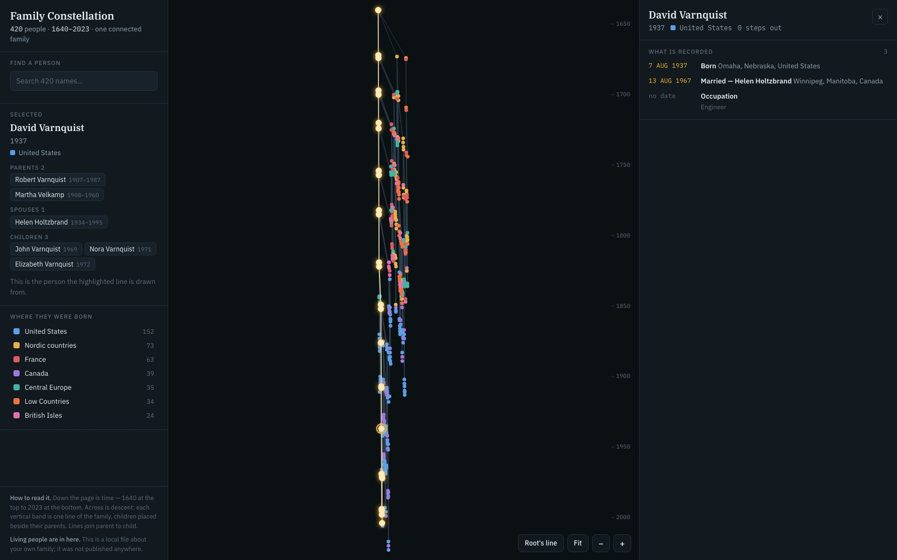

A visual product from messy data
A 3D family tree in one offline file
A build pipeline that turns a genealogy export into a single web page you open from disk: a 3D family tree, a migration map, lineage and statistics views, with no server and no connection.

- GEDCOM filethe genealogy export
- Tree viewlayout, names, details
- Places and mapGeoNames lookup
- Lineage and storiesroot person and viewer
- Payload checkcheck_payloads.py, before anything is combined
- One HTML pagepayloads folded into the templates

The problem
Family trees exported from genealogy sites grow to tens of thousands of people. Pedigree charts and printed posters stop being readable long before that, and the hosted viewers need an account and a connection.
What I directed
I set the goals, wrote the specifications and acceptance checks, and verified the results against my own family data. The agents wrote most of the code.
- One file, opened from disk. A page opened from disk cannot load its own side files, so every piece of data is built into the page itself.
- A layout that stays readable at size. Height is birth year, distance from the center is steps from a chosen root person's line, and angle is the family branch.
- The same data drives every view. The 3D tree, a map of births, marriages, deaths and moves, an ancestry view, and charts with captions computed from the data they describe.
- Safe to share. A share-safe mode shows living people as "Living person" with no dates or places, including in exported images.
- Usable by more people. Name search, keyboard navigation, screen-reader text, a print view, a phone layout, and a flat 2D page for computers that cannot draw 3D.
How the results were verified
- The build refuses bad combinations. Each large data block carries a stamp of the person order it was built for, and the build will not combine mismatched ones.
- Builds are repeatable. Two builds of the sample produce a byte-identical data file.
- Rules that come from real bugs. Each placeholder must appear exactly once, and the page's 59 script pieces are checked for duplicate names before assembly.
- On the sample, the pipeline runs clean and the payload check reports 0 failed.
The outcome
The viewer works for the private tree it was built for. The public copy was scrubbed of all real family data and rebuilt on an invented 420-person family, so anyone can run the full build and open the result.
Its view builder is reused by a second project, genealogy-evidence-pipeline, so the two agree on one data format.
Honest limits
- No automated test suite ships with it; the payload check and a self-test are the checks.
- Browser behavior on the sample has not been re-tested beyond those checks.
- Guided tours, a research to-do list and record search from the private version were left out of the public copy.
- Region colors and some name rules were tuned for Northern European and North American records.
ryanwisth/family-tree-3dThe code, with its real status and limits.
View the repository →